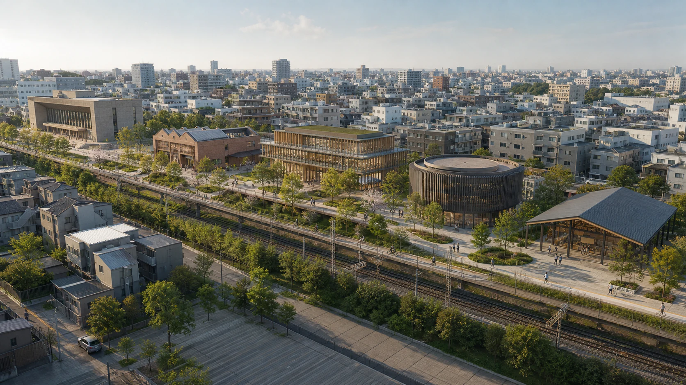

京张创新机制走廊
铁路知识轴串联遗产、公共学习、公共服务和受控验证，不将研究范围伪装成法定边界。

西直门、大钟寺、未来学习空间、AI 原点与众智园保持固定顺序，每一站都有独立入口与清楚的公共身份。
线路为概念体验结构，不构成法定红线、测绘边界或机构授权。
01 · 总览地图 / DIRECT ENTRY
corridor 仅用于读取固定路线，不是第六站。下列五张项目内原创表现图同时是离线 fallback 资产；点击即可带完整 URL 状态进入。
02 · 三层范围 / SCOPE
铁路知识轴串联遗产、公共学习、公共服务和受控验证，不将研究范围伪装成法定边界。
固定五站顺序、直接入口、交通慢行、蓝绿公共空间与普通公共服务底座共同组织总体体验。
同一 cue source 的 53 秒导览与终点 Portfolio Explore 已通过限定验证；真实空间审批与运营仍属外部触发条件。
03 · DESIGN LAYERS
04 · METRICS / PROVISIONAL
上述三项均为 provisional design-model values，只用于本次概念方案内部复算；取得官方红线、控规、权属和测绘数据后必须重新计算。
05 · RUNTIME RECEIPT / VIDEO
PASS 仅适用于该 commit、production package 与所列矩阵。78 条非致命 WebGL 纹理 warning 已保留在 receipt 中。
06 · TASK / CHECK
07 · EVIDENCE BOUNDARY
七张 WebP、Canvas fallback 与本页界面为项目原创表达。五站顺序、镜头、53 秒 cue、Portfolio 与媒体 receipt 绑定 source commit 586ee76e…4258。中文使用由 Source Han Sans CN 2.005R 合法派生并按 OFL 重命名的内嵌 JZ Offline CJK 子集；无 CDN、远程字体、脚本、地图瓦片或跟踪代码。
geometry 是非官方 provisional boundary；建筑、运营与服务关系为概念设计模型。官方红线、机构授权、真实运营主体、预算、消防、市政、权属、保险与 DPIA 继续作为未来实施触发条件。